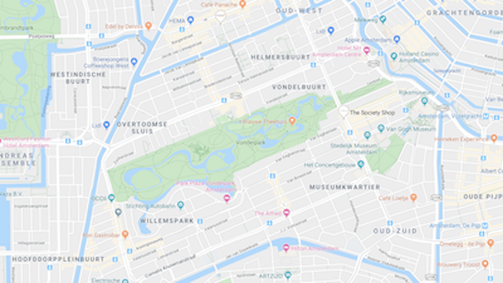

Activities
Pinksteren is celebrated in the Summer and we are lucky to have that being celebrated. The sunny weather makes it all so much better.
The Vondelpark Theater
On June the 9th Pinksteren is being celebrated at the famous big Amsterdam park, the Vondelpark. There will be drinks and food and there are plenty of people you can get to know.
€ 0
Date: 9 June 2019
Address: Vondelpark Amsterdam
From Central station you can travel with tram 2, 11 and 12 to Leidseplein. And you're there.